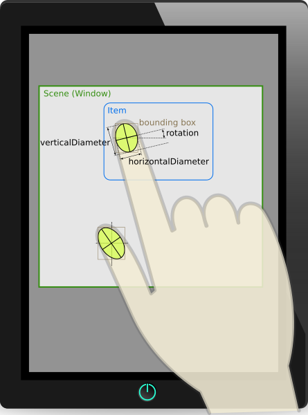

TouchPoint QML Type
Describes a touch point in a MultiPointTouchArea. More...
| Import Statement: | import QtQuick |
Properties
- ellipseDiameters : size
- pointId : int
- pressed : bool
- pressure : real
- previousX : real
- previousY : real
- rotation : real
- sceneX : real
- sceneY : real
- startX : real
- startY : real
- uniqueId : pointingDeviceUniqueId
- velocity : vector2d
- x : real
- y : real
Detailed Description
The TouchPoint type contains information about a touch point, such as the current position, pressure, and area.

Property Documentation
These properties hold the current position of the touch point.
These properties hold additional information about the current state of the touch point.
pressureis a value in the range of 0.0 to 1.0.velocityis a vector with magnitude reported in pixels per second.
Not all touch devices support velocity. If velocity is not supported, it will be reported as 0,0.
These properties hold the starting position of the touch point.
These properties hold the previous position of the touch point.
These properties hold the current position of the touch point in scene coordinates.
ellipseDiameters : size |
This property holds the major and minor axes of the ellipse representing the covered area of the touch point.
pointId : int |
This property holds the point id of the touch point.
Each touch point within a MultiPointTouchArea will have a unique id.
pressed : bool |
This property holds whether the touch point is currently pressed.
rotation : real |
This property holds the angular orientation of this touch point. The return value is in degrees, where zero (the default) indicates the finger or token is pointing upwards, a negative angle means it's rotated to the left, and a positive angle means it's rotated to the right. Most touchscreens do not detect rotation, so zero is the most common value.
See also QEventPoint::rotation().
uniqueId : pointingDeviceUniqueId |
This property holds the unique ID of the touch point or token.
It is normally empty, because touchscreens cannot uniquely identify fingers. But when it is set, it is expected to uniquely identify a specific token (fiducial object).
Interpreting the contents of this ID requires knowledge of the hardware and drivers in use (e.g. various TUIO-based touch surfaces).